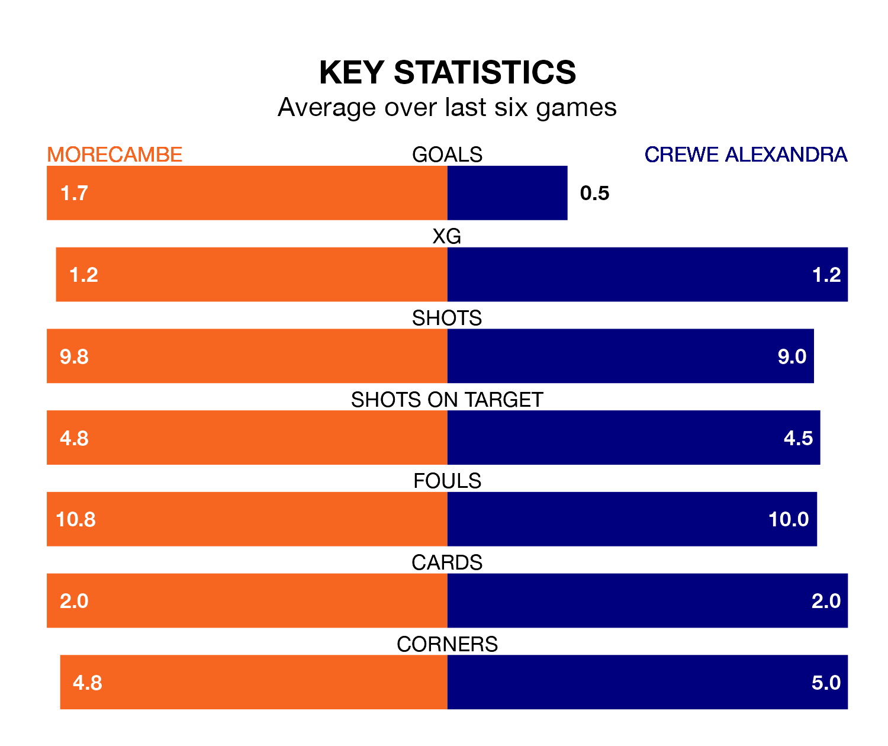

Crewe Alexandra travel to the Mazuma Stadium looking to secure a first win in six EFL League Two games against Morecambe on late Tuesday.
The Railwaymen have lost two and drawn three matches since they last earned three points – against Sutton United on March 12.
They face a Morecambe side who have won just two and lost three over that time.
With 67 goals in 42 games so far this season, Crewe are scoring more than average in the league with 1.6 goals per game. And they are conceding fewer than average, letting in 58 goals at a rate of 1.4 per game.
Morecambe, meanwhile, are average scorers, with 1.5 goals per game. They have conceded 1.7 goals per game.
In the last 10 years, Morecambe and Crewe have played each other on 11 occasions. Morecambe won two of them, Crewe six, and they drew three times.
On average, the Shrimps scored 1.0 goal and the Railwaymen 2.1 in those matches.
Their last meeting was on March 2, when Morecambe won 3-2 away.
The Railwaymen are sixth in the table after 42 games, of which they have won 18 and drawn 13, earning 67 points.
The Shrimps are four places behind the visitors in 10th, with 17 wins and nine draws putting them on 60 points.
Morecambe's last match was on Saturday, a 3-0 loss against Doncaster Rovers.
Crewe drew 0-0 with Accrington Stanley last time out, also on Saturday.
Tuesday's match will be refereed by Scott Oldham, who has taken charge of 11 EFL League Two games so far this season, issuing no red cards and booking 37 players. He has awarded three penalties.
He is yet to oversee a match featuring either Morecambe or Crewe this season.
Updated: 14:47 (UTC), 09/04/24